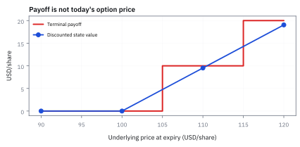

18.3 Binomial Tree Pricing
ราคา option คือต้นทุนของพอร์ตหุ้นกับเงินกู้ที่จ่ายเงินเท่า option ทุกกิ่งของต้นไม้ ไม่ใช่ค่าเฉลี่ยของ payoff ตามโอกาสที่ใครคิดว่าหุ้นจะขึ้น
หุ้น ABC และหุ้น XYZ ราคา \$100 ทั้งคู่ อีกหนึ่งช่วงจะเป็น \$110 หรือ \$90 เหมือนกัน นักวิเคราะห์บอกว่า ABC มีโอกาสขึ้น 99% ส่วน XYZ มีโอกาสขึ้นแค่ 1% เงินฝากโต 1% ต่อช่วง call strike \$100 ของตัวไหนแพงกว่า และแพงกว่ากันเท่าไร? คำตอบที่ล่อใจคือคิดลดค่าเฉลี่ยของ payoff: ABC ได้ $0.99(10)/1.01=\$9.80$ XYZ ได้ \$0.10
ลองตอบก่อนเปิดเฉลย
ราคาเท่ากันคือ \$5.45 ทั้งสองตัว ถือหุ้นครึ่งหุ้นแล้วกู้ \$44.55 ได้พอร์ตที่จ่าย \$10 เมื่อหุ้นขึ้นและ \$0 เมื่อลง ตรงกับ call ทุกกรณี ถ้ามีคนยอมซื้อ call ของ ABC ที่ \$9.80 เราขายให้แล้วสร้างพอร์ตนี้ด้วย \$5.45 เก็บ \$4.36 ได้แน่นอน โอกาส 99% ไม่อยู่ในสูตรเลย เพราะความเชื่อเรื่องทิศทางอยู่ในราคาหุ้นวันนี้แล้ว
สิ่งที่เราจะสร้าง
14.1 และ 14.2 ตั้งราคา option ในเวลาต่อเนื่องด้วยการ hedge ที่ปรับทุกขณะ หน้านี้ทำเรื่องเดียวกันในโลกที่หุ้นมีแค่สองทางต่อช่วง ซึ่งแก้ได้ด้วยสมการสองตัวแปร ทุกตัวเลขตรวจได้ด้วยเครื่องคิดเลข และต่อยอดไปถึง option แบบอเมริกันที่สูตรปิดทำไม่ได้
ลำดับคือ สร้างพอร์ตเลียนแบบหนึ่งช่วงด้วยมือ ดูว่าราคาอื่นเปิดช่องให้เก็บเงินฟรี หาเงื่อนไขที่ต้นไม้ไม่มีช่องนั้น จัดรูปจนน้ำหนัก $q$ โผล่ออกมาเอง แก้ปริศนา ABC กับ XYZ ต่อต้นไม้เป็นสามช่วงตามตัวอย่างของคอร์ส ตรวจว่าพอร์ตเลียนแบบไม่ต้องเติมเงิน ดูผลของดอกเบี้ย ตั้งราคา put อเมริกัน แล้วเลือก $u$ กับ $d$ จากความผันผวนจนต้นไม้ลู่เข้า Black–Scholes
ศัพท์ที่ใช้ในหัวข้อนี้
- Binomial tree
- แบบจำลองที่ราคาหุ้นในแต่ละช่วงคูณ $u$ (ขึ้น) หรือ $d$ (ลง) ได้แค่สองทาง ใช้เพราะแก้ด้วยพีชคณิตได้ทีละโหนด และเมื่อซอยช่วงถี่พอก็ใกล้แบบจำลองเวลาต่อเนื่อง
- Replicating portfolio
- พอร์ตหุ้น $x$ หุ้นกับเงินฝากหรือเงินกู้ $y$ ที่จ่ายเงินเท่า option ทุกกิ่ง ของสองอย่างที่จ่ายเท่ากันทุกกรณีต้องมีราคาเท่ากัน จึงใช้เป็นราคาได้
- Arbitrage แบบ A และแบบ B
- แบบ A คือได้เงินวันนี้และไม่มีทางเสียในอนาคต แบบ B คือไม่ต้องจ่ายวันนี้ ไม่มีทางเสีย และมีโอกาสได้ ราคาที่ดีต้องไม่เปิดช่องทั้งสองแบบ
- Risk-neutral probability ($q$)
- น้ำหนักที่ทำให้ราคา option เขียนเป็นค่าเฉลี่ยของ payoff คิดลดด้วยดอกเบี้ย มันมาจาก $u$, $d$ และ $R$ เท่านั้น ไม่ใช่โอกาสจริงที่หุ้นจะขึ้น
- European และ American option
- แบบยุโรปใช้สิทธิ์ได้วันหมดอายุวันเดียว แบบอเมริกันใช้สิทธิ์ได้ทุกวันก่อนหมดอายุ ต้นไม้ตั้งราคาแบบหลังได้ด้วยการเทียบ “ใช้เลย” กับ “ถือต่อ” ทุกโหนด
- Self-financing และ backward induction
- self-financing คือปรับพอร์ตได้ทุกโหนดโดยไม่เติมหรือดึงเงิน backward induction คือคิดจากปลายต้นไม้ที่รู้ payoff แน่นอน ย้อนกลับมาทีละช่วงจนถึงวันนี้
สัญลักษณ์และหน่วย
| สัญลักษณ์ | ความหมาย | หน่วย |
|---|---|---|
| $S_0,\ K$ | ราคาหุ้นวันนี้ และ strike | \$ ต่อหุ้น |
| $u,\ d$ | ตัวคูณราคาเมื่อขึ้นและลงในหนึ่งช่วง | ไม่มีหน่วย |
| $R$ | เงินฝาก \$1 โตเป็น \$$R$ ในหนึ่งช่วง | ไม่มีหน่วย |
| $C_u,\ C_d,\ C_0$ | ค่า option ที่กิ่งขึ้น กิ่งลง และวันนี้ | \$ ต่อหุ้น |
| $x,\ y$ | จำนวนหุ้น และเงินในบัญชีเงินฝาก (ลบคือกู้) | หุ้น, \$ |
| $q,\ p$ | น้ำหนักตั้งราคา และโอกาสจริงที่หุ้นขึ้น | ไม่มีหน่วย |
| $\sigma,\ \Delta t,\ n$ | ความผันผวนต่อปี ความยาวหนึ่งช่วง และจำนวนช่วง | ต่อปี$^{1/2}$, ปี, ช่วง |
ขั้นที่ 1 — หนึ่งช่วงด้วยมือ: พอร์ตหุ้นกับเงินกู้ที่จ่ายเท่า call
หุ้น \$100 อีกหนึ่งช่วงเป็น \$120 หรือ \$90 เงินฝากโต 1.05 call strike \$100 จ่าย \$20 หรือ \$0 เราไม่ทายว่าหุ้นจะไปทางไหน แต่หาพอร์ต $x$ หุ้นกับเงิน $y$ ในบัญชีที่ปลายช่วงมีค่าเท่า call ทั้งสองกิ่ง ได้สองสมการสองตัวแปร
ลบสมการล่างออกจากบน เงินฝากหักล้างกันเหลือ $30x=20$ พอร์ตคือซื้อหุ้นสองในสามหุ้น แล้วกู้ \$57.1429 ซึ่งปลายช่วงต้องคืน \$60 ถ้าหุ้นขึ้นได้ $80-60=20$ ถ้าลงได้ $60-60=0$ ตรงกับ call ทั้งสองกิ่ง
พอร์ตนี้วันนี้มีต้นทุน \$9.5238 และไม่มีบรรทัดไหนใช้โอกาสที่หุ้นจะขึ้นเลย $y$ ติดลบแปลว่ากู้ ถ้า $x$ ติดลบจะแปลว่าชอร์ตหุ้น ซึ่งเกิดกับ put
Figure 18.3a — พอร์ตเลียนแบบจ่ายเท่า call ทั้งสองกิ่ง

กลุ่มซ้าย (Up) และขวา (Down) แท่งน้ำเงินคือ payoff ของ call คือ 20 และ 0 แท่งเขียวคือพอร์ตเลียนแบบ $\tfrac23(120)-57.1429(1.05)$ และ $\tfrac23(90)-57.1429(1.05)$ ซึ่งได้ 20.0000 และ 0.0000 (ต่างกันแค่ \$0.00005 จากการปัดเงินกู้) แท่งจึงสูงเท่ากันทุกกิ่ง
ขั้นที่ 2 — ทำไมราคาต้องเป็น \$9.5238: ลองราคาอื่นแล้วเก็บเงินฟรี
โจทย์ให้อะไรมาบ้าง: dealer เสนอขาย call ตัวเดียวกันที่ \$12 และอีกรายเสนอซื้อที่ \$8 พอร์ตเลียนแบบจากขั้นที่ 1 มีต้นทุน \$9.5238
คำตอบ: ถ้ามีคนซื้อ call จากเราที่ \$12 เราขายให้ แล้วใช้ \$9.5238 สร้างพอร์ตเลียนแบบ ปลายช่วงพอร์ตจ่ายภาระของ call ได้พอดีทุกกิ่ง เหลือ \$2.4762 ตั้งแต่วันนี้ ถ้ามีคนขาย call ให้เราที่ \$8 เราซื้อ แล้วทำพอร์ตกลับทาง (ชอร์ตหุ้น $\tfrac23$ หุ้น ฝาก \$57.1429) ได้ \$1.5238 วันนี้ ทั้งสองกรณีคือ arbitrage แบบ A: ได้เงินวันนี้และไม่มีทางเสีย ราคาที่ไม่เปิดช่องนี้มีค่าเดียวคือ \$9.5238
ตรวจเองใน 10 วินาที: $9.5238+2.4762=12$ และในตลาดจริงเงินก้อนนี้เป็นเพดาน ก่อนหักส่วนต่างราคาซื้อขาย ค่ายืมหุ้น และหลักประกัน
ขั้นที่ 3 — ต้นไม้ต้องมี $d\lt R\lt u$ ไม่อย่างนั้นทั้งตลาดมีเงินฟรี
ก่อนตั้งราคา option ต้องถามว่าหุ้นกับเงินฝากเองเปิดช่องให้เก็บเงินฟรีไหม ถ้าเงินฝากแพ้หุ้นแม้ในกิ่งที่แย่ที่สุด ($R\le d$) ให้กู้ $S_0$ มาซื้อหุ้นหนึ่งหุ้น ถ้าเงินฝากชนะหุ้นแม้ในกิ่งที่ดีที่สุด ($R\ge u$) ให้ชอร์ตหุ้นหนึ่งหุ้นแล้วฝากเงินที่ได้ ทั้งสองทางไม่ใช้เงินตัวเองเลย ดูว่าปลายช่วงได้อะไร
ทั้งสองกรณีเป็น arbitrage แบบ B: ต้นทุนศูนย์ ไม่มีกิ่งไหนติดลบ และมีกิ่งที่ได้แน่ ๆ ตลาดจึงไม่มีช่องนี้ก็ต่อเมื่อ $d\lt R\lt u$ ตัวอย่างขั้นที่ 1 ผ่าน เพราะ $0.9\lt 1.05\lt 1.2$
ขั้นที่ 4 — จัดรูปราคาเลียนแบบ แล้วน้ำหนัก $q$ โผล่ออกมาเอง
ทำขั้นที่ 1 ในรูปทั่วไป: กิ่งขึ้นหุ้นเป็น $uS_0$ option จ่าย $C_u$ กิ่งลงเป็น $dS_0$ จ่าย $C_d$ แก้หา $x$ กับ $y$ แล้วรวมเป็นราคา ไม่เติมสมมติฐานเรื่องโอกาสเลย แค่จัดพีชคณิต
บรรทัดที่สี่เอา $xS_0$ ไปคูณ $R/R$ แล้วรวมกับ $y$ ส่วนบรรทัดที่ห้ารวมพจน์ของ $C_d$: $C_d-\frac{(R-d)C_d}{u-d}=\frac{u-R}{u-d}C_d$ ตัวคูณสองตัวบวกกันได้ 1 และเป็นบวกทั้งคู่เมื่อ $d\lt R\lt u$ จึงตั้งชื่อว่า $q$ และ $1-q$ ได้
ราคาจึงเขียนเหมือน “ค่าเฉลี่ยของ payoff คิดลด” แต่ลำดับกลับกัน: เราได้ราคาจากการเลียนแบบก่อน แล้วค่อยพบว่ามันมีรูปค่าเฉลี่ย ตัวอย่างขั้นที่ 1 ได้ $q=0.15/0.30=0.5$ และ $0.5(20)/1.05=9.5238$ เท่ากัน ตรวจได้ด้วยว่า $qu+(1-q)d=0.5(1.2)+0.5(0.9)=1.05=R$ คือใต้น้ำหนัก $q$ หุ้นโตเท่าเงินฝาก ชื่อ risk-neutral มาจากตรงนี้
put strike 100 บนต้นไม้เดียวกันจ่าย 0 กับ 10 จึงได้ $0.5(10)/1.05=4.7619$ ($x=-\tfrac13$ คือชอร์ตหุ้น) และ $9.5238-4.7619=100-100/1.05$ ตรงกับ put–call parity ใน 14.4
Figure 18.3b — ราคา call ของต้นไม้หนึ่งช่วงเมื่อ strike เปลี่ยน

แกนนอนคือ strike 70 ถึง 130 (121 จุด) แกนตั้งคือ $[0.5\max(120-K,0)+0.5\max(90-K,0)]/1.05$ ของขั้นที่ 4 เส้นหักสองจุดที่ราคาหุ้นปลายกิ่ง: ต่ำกว่า 90 ทั้งสองกิ่งจ่าย ความชัน $-1/1.05$ ระหว่าง 90 ถึง 120 เหลือกิ่งเดียว ความชันครึ่งหนึ่ง ตั้งแต่ 120 ราคาเป็นศูนย์ ที่ $K=70$ ได้ 33.33 ที่ $K=100$ ได้ 9.52 เส้นนี้มาจากน้ำหนักเดิม ไม่ใช่การพยากรณ์หุ้น
Figure 18.3c — payoff วันหมดอายุไม่ใช่ราคาวันนี้

ราคาหุ้นปลายทางสมมติสี่ค่า 90, 100, 110, 120 เส้นขั้นบันไดแดงคือ payoff $\max(S-100,0)$ ได้ 0, 0, 10, 20 จุดน้ำเงินคือ payoff หารด้วย 1.05 ได้ 0, 0, 9.52, 19.05 ซึ่งคือค่าวันนี้ถ้ารู้แน่ว่าจะจบที่ราคานั้น ข้อควรรู้: ทั้งสองเส้นไม่ใช่ราคา option ราคาจริงเป็นตัวเลขเดียว 9.5238 ที่ถ่วงสองกิ่ง 120 กับ 90 ด้วย $q$ แล้วคิดลด
ขั้นที่ 5 — ปริศนา ABC กับ XYZ
โจทย์ให้อะไรมาบ้าง: ทั้งสองหุ้น $S_0=100$ ไป 110 หรือ 90 call strike 100 จ่าย 10 หรือ 0 โอกาสขึ้นจริง $p=0.99$ สำหรับ ABC และ $p=0.01$ สำหรับ XYZ โจทย์ต้นฉบับไม่บอกดอกเบี้ย ที่นี่ใช้ $R=1.01$ เหมือนตัวอย่างอื่นของหน้า
คำตอบ: call ทั้งสองตัวราคา \$5.4455 เพราะพอร์ตเลียนแบบเหมือนกันทุกตัวเลข สองแถวล่างคือราคาถ้าคิดลดด้วยโอกาสจริง ถ้ามีคนซื้อ call ของ ABC ที่ \$9.8020 เราขายแล้วสร้างพอร์ตด้วย \$5.4455 เก็บ \$4.3564 แน่นอน
ตรวจเองใน 10 วินาที: $q$ ไม่ขึ้นกับ $p$ เลย ในสูตรมีแค่ 1.01, 1.1 และ 0.9 ส่วนที่ดูแปลกเพราะโจทย์ถามผิดตั้งแต่ต้น: ถ้าตลาดเชื่อว่า ABC ขึ้นแน่ ราคาวันนี้คงไม่เท่ากับ XYZ ที่ \$100 ความเชื่อเรื่องทิศทางอยู่ในราคาหุ้นแล้ว option จึงไม่นับซ้ำ
ขั้นที่ 6 — ต้นไม้ของคอร์ส: หุ้น \$100 ไป 107 หรือ 93.46 ดอกเบี้ย 1% ต่อช่วง
โจทย์ให้อะไรมาบ้าง: $u=1.07$ $d=0.9346$ (ปัดจาก $1/1.07=0.934579$) $R=1.01$ หา call สามตัว strike 102, 107 และ 92
คำตอบ: 2.76, 0 และ 8.91 strike 107 เท่ากับยอดกิ่งขึ้นพอดี call จึงจ่ายศูนย์ทั้งสองกิ่งและราคาศูนย์ strike 92 ต่ำกว่าทั้งสองกิ่ง call ถูกใช้สิทธิ์แน่นอน จึงเท่ากับถือหุ้นหนึ่งหุ้นแล้วกู้ $92/1.01$ ไม่ต้องใช้ $q$ เลย
ตรวจเองใน 10 วินาที: $0.5569(5)/1.01=2.76$ ตรงกับพอร์ตเลียนแบบ ถ้าใช้ $d=1/1.07$ เต็มหลัก เงินกู้เป็น 34.1649 ราคายังปัดได้ 2.76
ขั้นที่ 7 — ต่อเป็นสามช่วง: ย้อนทีละโหนด หรือถ่วงปลายทางครั้งเดียว
ต้นไม้หลายช่วงคือต้นไม้หนึ่งช่วงหลายต้นต่อกัน ทุกโหนดใช้สูตรขั้นที่ 4 เดิม เริ่มจากปลายทางที่รู้ payoff แน่นอน ใช้ $u=1.07$ $d=1/1.07$ $R=1.01$ call strike 100 หมดอายุที่ช่วงที่ 3 น้ำหนัก $q=0.556936$ หุ้นปลายทางคือ 122.50, 107.00, 93.46 และ 81.63 call จึงจ่าย $C_3$ ตามแถวแรก
ทางที่สองไม่ต้องหาค่ากลางทาง: โอกาสของแต่ละเส้นทางคือผลคูณน้ำหนักตามกิ่ง ปลายบนต้องขึ้นสามครั้ง ปลายที่สองขึ้นสองลงหนึ่งมีสามเส้นทาง สองปลายล่างจ่ายศูนย์ แล้วคิดลดครั้งเดียวด้วย $1.01^3=1.030301$
ปลายบนสุดคือ $100(1.07)^3=122.5043$ ไม่ใช่ 122.50 พอดี ถ้าใช้ 22.50 จะได้ 6.5737 แทน 6.5744 ต่างกันเล็กน้อยแต่พอให้สองวิธีไม่ตรงกันในหลักที่สี่
Figure 18.3d — ต้นไม้สามช่วงของคอร์ส และราคา call ทุกโหนด

หุ้นเริ่ม \$100 ขึ้นคูณ 1.07 ลงคูณ $1/1.07$ ดอกเบี้ยต่อช่วง 1% ป้ายแต่ละโหนดคือราคาหุ้นและราคา call strike 100 ที่ย้อนมาจากปลายทาง เส้นประแดงคือระดับ strike จุดสีเทาคือโหนดที่ call หมดค่าแล้ว ราคาที่รากคือ 6.57 ตรงกับขั้นที่ 7
ขั้นที่ 8 — พอร์ตเลียนแบบทีละโหนด และตรวจว่าไม่ต้องเติมเงิน
ที่แต่ละโหนดถือหุ้น $x$ หุ้นกับบัญชีเงินฝาก $y$ หน่วย โดยหนึ่งหน่วยมีค่า $1.01^t$ ที่เวลา $t$ (วิธีนับของคอร์ส) คำถามคือ ตอนหุ้นขึ้นไปที่ 107 แล้วต้องปรับพอร์ต ต้องใส่เงินเพิ่มหรือไม่ ถ้าต้องใส่ ราคา 6.57 วันนี้ก็ยังไม่ครบต้นทุน
พอร์ตเก่าเข้าโหนดนี้ด้วยค่า 10.23 เท่ากับ call ที่โหนดนั้นพอดี แล้วขายเงินฝากไปซื้อหุ้นเพิ่มเป็น 0.8019 หุ้น พอร์ตใหม่ยังมีค่า 10.23 ไม่มีเงินไหลเข้าออก นี่คือ self-financing และเป็นเหตุผลว่าทำไมราคาวันนี้ 6.57 พอสำหรับทั้งต้นไม้
โหนดอื่นได้แบบเดียวกัน: ล่างของเวลา 1 ถือ $[0.3050,\ -26.11]$ ที่เวลา 2 บนสุด $[1,\ -97.06]$ กลาง $[0.5169,\ -46.89]$ และล่างสุด $[0,\ 0]$ ที่บนสุดถือหุ้นเต็มหนึ่งหุ้นเพราะ call ถูกใช้สิทธิ์แน่แล้ว ถ้าปัด $x_1$ เป็น 0.598 ค่าพอร์ตเก่าจะเป็น 10.20 ความต่างนั้นมาจากการปัดเท่านั้น
ขั้นที่ 9 — ดอกเบี้ยสูงขึ้น call แพงขึ้น
โจทย์ให้อะไรมาบ้าง: ต้นไม้สามช่วง $u=1.06$ $d=1/1.06$ call strike 95 ลองดอกเบี้ยต่อช่วง $R=1.02$ และ $R=1.04$
คำตอบ: ดอกเบี้ยขึ้น ราคา call ขึ้นจาก 11.04 เป็น 15.64 แม้จะคิดลดแรงขึ้น เพราะ $q$ ขึ้นจนน้ำหนักเทไปทางปลายที่ call มีค่า เหตุผลทางเงิน: ผู้ซื้อ call เลื่อนการจ่าย strike ไปปลายทาง เงินที่เลื่อนไปนั้นได้ดอกเบี้ยมากขึ้น
ตรวจเองใน 10 วินาที: ต้นไม้ราคาหุ้นเหมือนเดิมทั้งสองกรณี (ปลายบนสุด $100(1.06)^3=119.10$ call จ่าย 24.10) สิ่งเดียวที่เปลี่ยนคือ $R$ ซึ่งเข้าไปทั้งใน $q$ และในตัวหาร
ขั้นที่ 10 — option อเมริกัน: ทุกโหนดเลือกค่าที่มากกว่าระหว่างใช้เลยกับถือต่อ
เริ่มจากเกมของคอร์ส: ทอยลูกเต๋าได้สูงสุดสามครั้ง หลังแต่ละครั้งจะหยุดรับเงินเท่าแต้มก็ได้ หรือทอยต่อก็ได้ คิดจากครั้งสุดท้ายย้อนกลับ แล้วใช้ตรรกะเดียวกันกับ put อเมริกันบนต้นไม้ขั้นที่ 7 ที่ strike 100
เหลือทอยครั้งเดียวต้องรับแต้มที่ออก ค่าเฉลี่ย 3.5 เหลือสองครั้ง ออก 4, 5, 6 ควรหยุดเพราะมากกว่า 3.5 ที่จะได้ถ้าทอยต่อ ครั้งแรกของสามครั้ง เกณฑ์หยุดขึ้นเป็น 4.25 จึงหยุดแค่ 5 กับ 6 ถ้าทอยได้ 1,000 ครั้ง ค่าของเกมเข้าใกล้ 6 เพราะรอจน 6 ออกได้แทบแน่นอน
put ที่โหนดล่างสุดของเวลา 2 (หุ้น 87.34) ถือต่อได้ 11.67 แต่ใช้สิทธิ์ทันทีได้ 12.66 จึงใช้ทันที เพราะรับ \$100 เร็วขึ้นแล้วได้ดอกเบี้ย ที่โหนดล่างของเวลา 1 ถือต่อได้ 7.13 มากกว่าใช้เลย 6.54 จึงถือ put อเมริกันแพงกว่ายุโรป \$0.19
call บนหุ้นที่ไม่จ่ายปันผลไม่มีวันคุ้มที่จะใช้ก่อน เพราะค่าถือต่อไม่ต่ำกว่า $S_t-K/R^{n-t}$ ซึ่งมากกว่า $S_t-K$ ที่ได้ถ้าใช้เลย
ขั้นที่ 11 — $u$ กับ $d$ มาจากไหน: เลือกจากความผันผวน (CRR)
ตัวอย่างข้างบนเลือก $u$ และ $d$ ให้เลขสวย ถ้าจะใช้ต้นไม้กับหุ้นจริง สองตัวนี้ต้องมาจากสิ่งที่วัดได้ Cox, Ross และ Rubinstein ให้ log ของราคาขยับ $\pm\sigma\sqrt{\Delta t}$ ต่อช่วง ซึ่งทำให้ความแปรปรวนของ log ราคาต่อช่วงเป็น $\sigma^2\Delta t$ ตรงกับ GBM ของ 10.1
$X$ คือก้าวของ log ราคาในหนึ่งช่วง ทั้งสองกิ่งยกกำลังสองได้ค่าเดียวกัน ความแปรปรวนจึงถูกตรึงไว้ไม่ว่าน้ำหนักจะเป็นเท่าไร (ถ้าค่าเฉลี่ยใกล้ศูนย์ ซึ่งจริงเมื่อ $\Delta t$ สั้น) และ $ud=1$ ทำให้ขึ้นแล้วลงกลับมาที่เดิม ต้นไม้จึงรวมกิ่ง ($t+1$ โหนดที่เวลา $t$ แทน $2^t$)
อ่านกลับทางก็ได้: ต้นไม้สองช่วง ช่วงละครึ่งปี ที่ $u=1.2$ เท่ากับความผันผวน $\ln 1.2/\sqrt{0.5}=25.78\%$ ต่อปี ขั้นถัดไปใช้ต้นไม้นี้
ขั้นที่ 12 — put อเมริกันบนต้นไม้ CRR สองช่วง
โจทย์ให้อะไรมาบ้าง: หุ้น \$100 put strike 100 อายุ 1 ปี ดอกเบี้ย 2% ต่อปีทบต้นต่อเนื่อง สองช่วง $\Delta t=0.5$ $u=1.2$ $d=1/1.2$
คำตอบ: ที่โหนดล่าง (หุ้น 83.33) ใช้สิทธิ์ทันทีได้ 16.6667 มากกว่าถือต่อ 15.6717 put อเมริกันจึงราคา \$8.5482 แพงกว่ายุโรป \$8.0378 อยู่ \$0.5103 ถ้าใช้สูตรแบบยุโรปกับ put อเมริกัน ราคาจะต่ำไป 6%
ตรวจเองใน 10 วินาที: $0.990050\times0.518045\times16.6667=8.5482$ และกิ่งบนเป็นศูนย์ทั้งหมดเพราะหุ้นไม่เคยต่ำกว่า 100 ในกิ่งนั้น
ขั้นที่ 13 — ซอยช่วงถี่ขึ้น ต้นไม้ลู่เข้า Black–Scholes
ต้นไม้เป็นแบบจำลองจริงก็ต่อเมื่อซอยถี่แล้วได้คำตอบเดียวกับสูตรปิด ใช้ call ยุโรป หุ้น \$100 strike 100 ดอกเบี้ย 5% ความผันผวน 30% อายุ 1 ปี บนต้นไม้ CRR $n$ ช่วง เทียบกับ Black–Scholes ของ 14.2
ความคลาดเคลื่อนเล็กลงราวสิบเท่าทุกครั้งที่ $n$ โตสิบเท่า และสลับข้าง: $n$ คู่ต่ำไป $n$ คี่สูงไป เพราะเมื่อ $n$ คู่ strike 100 ตรงกับโหนดกลางพอดี ความสลับนี้เป็นลักษณะปกติของต้นไม้ ไม่ใช่สัญญาณว่าคำนวณผิด
ทำไมต้องลู่เข้า: log ราคาปลายทางคือผลบวกของก้าว $\pm\sigma\sqrt{\Delta t}$ จำนวนมาก ตาม central limit theorem ใน 3.2 ผลบวกแบบนี้เข้าใกล้ Normal ราคาปลายทางจึงเข้าใกล้ lognormal ของ GBM ใน 10.1 ซึ่งเป็นสมมติฐานของ Black–Scholes
คำถามที่ควรถามออกมาดัง ๆ
ทำไมไม่ตั้งราคาด้วยค่าเฉลี่ยของ payoff ตามโอกาสจริง? ปริศนา St Petersburg ของคอร์สตอบได้ดี: โยนเหรียญจนออกหัว ถ้าออกครั้งที่ $n$ ได้ $2^n$ ดอลลาร์ ค่าเฉลี่ยคือ $\sum 2^n(1/2)^n=1+1+\dots$ เป็นอนันต์ แต่ไม่มีใครจ่ายมากเพื่อเล่น Daniel Bernoulli ให้คนตัดสินด้วย utility เช่น log ค่าเฉลี่ยของ log รางวัลคือ $\log2\sum n/2^n=2\log2$ เงินแน่นอนที่พอใจเท่ากันคือ $e^{2\log2}=\$4$
ปัญหาคือ utility ของแต่ละคนไม่เท่ากัน ราคาจึงไม่มีค่าเดียว ต้นไม้หลบปัญหานี้ทั้งหมด: ถ้าสร้างพอร์ตเลียนแบบได้ ราคาถูกบังคับเหลือค่าเดียวโดยไม่ต้องรู้ทั้งโอกาสจริงและความชอบของใคร
ต้นไม้ที่ไม่รวมกิ่งล่ะ? ถ้า $ud\ne1$ หรือ $u,d$ เปลี่ยนตามเวลา จำนวนโหนดโตเป็น $2^t$ ที่ 30 ช่วงคือราวหนึ่งพันล้านโหนด CRR เลือก $d=1/u$ ก็เพื่อหลบเรื่องนี้
ความผิดที่ให้คำตอบผิดแบบเงียบ ๆ
อ่าน $q$ เป็นโอกาสจริง หรือใช้ $p$ แทน $q$: call ของ ABC ได้ \$9.80 แทน \$5.45 และใครขายที่ราคานั้นให้ได้เสีย \$4.36 ต่อสัญญาให้คนที่สร้างพอร์ตเลียนแบบ
ลืมคิดลด: $0.5(20)=10$ ไม่ใช่ราคา ราคาคือ $10/1.05=9.5238$ ต่างกัน 5% ต่อช่วง และทบกันทุกช่วงของต้นไม้
ตั้งราคา put อเมริกันด้วยต้นไม้แบบยุโรป: ขั้นที่ 12 ได้ 8.0378 แทน 8.5482 ต่ำไป 6% เพราะลืมเทียบ “ใช้เลย” ทุกโหนด
เลือก $u$, $d$, $R$ ที่ไม่ผ่าน $d\lt R\lt u$: เช่น $u=1.01$ $d=0.99$ $R=1.02$ ได้ $q=(1.02-0.99)/0.02=1.5$ เกิน 1 และ $1-q$ ติดลบ ราคาที่ได้ไม่มีความหมาย โค้ดท้ายหน้าจึงปฏิเสธต้นไม้แบบนี้
ปัดราคาหุ้นกลางทาง: ใช้ 22.50 แทน 22.5043 ที่ปลายบนสุดทำให้สองวิธีของขั้นที่ 7 ต่างกัน 0.0007 ในต้นไม้หลายร้อยช่วง ความคลาดจากการปัดสะสมได้มากกว่านี้
ใช้ทำอะไรบนโต๊ะจริง
option หุ้นที่ซื้อขายในสหรัฐฯ ส่วนใหญ่เป็นแบบอเมริกัน โต๊ะ option จึงใช้ต้นไม้หรือกริดตั้งราคา put ที่ใช้สิทธิ์ก่อนได้ และใช้ต้นไม้เป็นตัวตรวจวิธีอื่น (ซอยถี่แล้วต้องเข้าใกล้สูตรปิด) ส่วน $x$ ในแต่ละโหนดคือจำนวนหุ้นที่ต้องถือเพื่อ hedge ซึ่ง 18.4 จะนับกำไรขาดทุนของการ hedge แบบนี้
สามโจทย์ตรวจความเข้าใจ
1. หุ้น \$50 อีกหนึ่งช่วงเป็น \$60 หรือ \$45 เงินฝากโต 1.02 put strike 50 ราคาเท่าไร หาทั้งพอร์ตเลียนแบบและ $q$
เฉลย
put จ่าย 0 กับ 5 $x=(0-5)/(60-45)=-\tfrac13$ (ชอร์ตหุ้น) $y=(5+\tfrac13(45))/1.02=19.6078$ ราคา $-16.6667+19.6078=\$2.9412$ ตรวจด้วย $q=(1.02-0.9)/(1.2-0.9)=0.4$ ได้ $0.6(5)/1.02=2.9412$ เท่ากัน
2. ใช้ put–call parity หา put ยุโรป strike 100 บนต้นไม้สามช่วงของขั้นที่ 7 แล้วเทียบกับ 3.63 ของขั้นที่ 10
เฉลย
$P=C-S_0+K/R^3=6.5744-100+100/1.030301=6.5744-100+97.0590=\$3.6334$ ตรงกับการย้อนทีละโหนด เพราะ call ลบ put คือ forward ซึ่งเลียนแบบได้ด้วยหุ้นหนึ่งหุ้นกับเงินกู้ $K/R^3$ ในทุกกิ่ง
3. เกมลูกเต๋าของขั้นที่ 10 ถ้าทอยได้สูงสุดสี่ครั้ง มีค่าเท่าไร และครั้งแรกควรหยุดที่แต้มไหน?
เฉลย
ถ้าทอยต่อจะได้ค่าของเกมสามครั้งคือ 4.6667 จึงหยุดเมื่อได้ 5 หรือ 6 เท่านั้น $V_4=\tfrac16(5+6)+\tfrac46(4.6667)=1.8333+3.1111=4.9444$
คำนวณซ้ำด้วย JavaScript
โค้ดนี้สร้างพอร์ตเลียนแบบหนึ่งช่วง ต้นไม้หลายช่วงแบบยุโรปและอเมริกัน พอร์ตที่ถือในทุกโหนด ผลของดอกเบี้ย เกมลูกเต๋า ต้นไม้ CRR และการลู่เข้า Black–Scholes (normal CDF จาก Taylor series) แล้วพิมพ์ตัวเลขหลักหนึ่งบรรทัด
const {exp, log, sqrt, max, abs} = Math;
function check(u, d, R) {
for (const [k, v] of Object.entries({u, d, R})) {
if (!(typeof v === 'number' && v > 0 && Number.isFinite(v))) throw new TypeError(`${k} must be a positive number`);
}
if (!(d < R && R < u)) throw new RangeError('no-arbitrage needs d < R < u');
}
// One period: x shares and y dollars in the bank reproduce payoffs vu (up) and vd (down).
function replicate(S0, u, d, R, vu, vd) {
check(u, d, R);
const x = (vu - vd) / (S0 * (u - d));
const y = (vd - x * S0 * d) / R;
return {x, y, price: x * S0 + y, q: (R - d) / (u - d)};
}
// n-period recombining tree. kind 'call' or 'put'; american allows exercise at every node.
// nodes[t][k] is the value after k up-moves out of t; S(t, k) is the stock price there.
function tree({S0, K, u, d, R, n, kind = 'call', american = false}) {
check(u, d, R);
if (!Number.isInteger(n) || n < 1) throw new RangeError('n must be a positive integer');
if (kind !== 'call' && kind !== 'put') throw new RangeError("kind must be 'call' or 'put'");
const q = (R - d) / (u - d);
const pay = s => kind === 'call' ? max(s - K, 0) : max(K - s, 0);
const S = (t, k) => S0 * u ** k * d ** (t - k);
let V = [...Array(n + 1)].map((_, k) => pay(S(n, k)));
const nodes = [V], exercised = [];
for (let t = n - 1; t >= 0; t--) {
V = V.slice(0, t + 1).map((_, k) => {
const hold = (q * V[k + 1] + (1 - q) * V[k]) / R;
if (american && pay(S(t, k)) > hold) { exercised.push([t, k]); return pay(S(t, k)); }
return hold;
});
nodes.unshift(V);
}
return {price: V[0], q, nodes, exercised, S, R};
}
// Holdings chosen at node (t, k): x shares and y units of a bank account worth R^t at time t.
function holdings(res, t, k) {
const {nodes, S, R} = res;
const x = (nodes[t + 1][k + 1] - nodes[t + 1][k]) / (S(t + 1, k + 1) - S(t + 1, k));
return {x, y: (nodes[t][k] - x * S(t, k)) / R ** t};
}
// Standard normal CDF from its Taylor series around 0 (about 1e-15 accurate for |x| < 8).
function normCdf(x) {
if (!Number.isFinite(x)) throw new TypeError('x must be a finite number');
if (x < -8) return 0;
if (x > 8) return 1;
let term = x, sum = x;
for (let k = 1; k < 300 && abs(term) > 1e-17 * abs(sum); k++) { term *= x * x / (2 * k + 1); sum += term; }
return 0.5 + sum * exp(-x * x / 2) / sqrt(2 * Math.PI);
}
function blackScholesCall(S, K, r, sigma, T) {
const d1 = (log(S / K) + (r + sigma * sigma / 2) * T) / (sigma * sqrt(T));
return S * normCdf(d1) - K * exp(-r * T) * normCdf(d1 - sigma * sqrt(T));
}
// Cox-Ross-Rubinstein steps: u = exp(sigma sqrt(dt)), d = 1/u, R = exp(r dt).
const crr = (sigma, r, T, n) => ({u: exp(sigma * sqrt(T / n)), d: exp(-sigma * sqrt(T / n)), R: exp(r * T / n)});
const base = {S0: 100, K: 100, u: 1.07, d: 1 / 1.07, R: 1.01, n: 3};
const call3 = tree(base), q = call3.q;
const put3 = tree({...base, kind: 'put', american: true}), put3e = tree({...base, kind: 'put'});
const hook = {S0: 100, K: 100, u: 1.2, d: 1 / 1.2, R: exp(0.02 * 0.5), n: 2, kind: 'put'};
const putA = tree({...hook, american: true}), putE = tree(hook);
let die = 3.5; const dice = [die];
for (let k = 2; k <= 1000; k++) { die = [1, 2, 3, 4, 5, 6].reduce((s, v) => s + max(v, die), 0) / 6; if (k <= 4) dice.push(die); }
const g = crr(0.30, 0.05, 0.01, 1);
console.log(JSON.stringify({
one: replicate(100, 1.2, 0.9, 1.05, 20, 0), onePut: replicate(100, 1.2, 0.9, 1.05, 0, 10),
slide: [5, 0, 15].map((vu, i) => replicate(100, 1.07, 0.9346, 1.01, vu, [0, 0, 1.46][i])),
abc: replicate(100, 1.1, 0.9, 1.01, 10, 0), realWorld: [0.99 * 10 / 1.01, 0.01 * 10 / 1.01],
call3: {price: call3.price, q, t2: call3.nodes[2], t1: call3.nodes[1],
oneShot: (q ** 3 * (100 * 1.07 ** 3 - 100) + 3 * q * q * (1 - q) * (107 - 100)) / 1.01 ** 3},
hold: [[0, 0], [1, 1], [1, 0], [2, 2], [2, 1], [2, 0]].map(([t, k]) => holdings(call3, t, k)),
rateEffect: [1.02, 1.04].map(R => tree({S0: 100, K: 95, u: 1.06, d: 1 / 1.06, R, n: 3}).price),
put3: {american: put3.price, european: put3e.price, exercised: put3.exercised, t2: put3e.nodes[2], t1: put3.nodes[1]},
parityPut: call3.price - 100 + 100 / 1.01 ** 3,
dice, dice1000: die,
crr: {...g, q: (g.R - g.d) / (g.u - g.d)},
hookPut: {sigma: log(1.2) / sqrt(0.5), q: putA.q, american: putA.price, european: putE.price,
t1: putE.nodes[1], exercised: putA.exercised},
convergence: [1, 10, 11, 100, 101, 2000].map(n => tree({S0: 100, K: 100, ...crr(0.3, 0.05, 1, n), n}).price),
blackScholes: blackScholesCall(100, 100, 0.05, 0.3, 1),
stPetersburgLogMean: [...Array(200)].reduce((s, _, i) => s + (i + 1) * log(2) / 2 ** (i + 1), 0),
exercise1: replicate(50, 1.2, 0.9, 1.02, 0, 5)
}));ที่มาที่ไป
Daniel Bernoulli ตีพิมพ์คำตอบของปริศนา St Petersburg ด้วย utility แบบ log ในปี 1738 ราคาที่ได้จึงขึ้นกับว่าใครเป็นคนซื้อ John Cox, Stephen Ross และ Mark Rubinstein ตีพิมพ์ต้นไม้สองกิ่งในปี 1979 และแสดงว่าถ้าเลียนแบบได้ ราคาถูกบังคับด้วยการไม่มีเงินฟรีเพียงอย่างเดียว ต้นไม้ของพวกเขาลู่เข้าสูตร Black–Scholes ปี 1973 และยังเป็นเครื่องมือหลักของ option แบบอเมริกันจนทุกวันนี้
ข้อจำกัด: วิธีนี้สมมติอะไร และของจริงเป็นอย่างไร
| สมมติอะไร | ของจริง | ผลเวลาใช้งาน |
|---|---|---|
| หุ้นไปได้แค่สองทางต่อช่วง | ราคาไปได้ทุกค่า และบางวันกระโดด | ต้องซอยช่วงถี่ ความคลาดลดราว $1/n$ และสลับข้างตามคู่คี่ของ $n$ |
| ซื้อขายเศษหุ้นได้ ไม่มีต้นทุน กู้และฝากที่อัตราเดียว | มีส่วนต่างราคาซื้อขาย ค่ายืมหุ้น และอัตรากู้สูงกว่าอัตราฝาก | ราคากลายเป็นช่วง ไม่ใช่ค่าเดียว (เหมือนคำถามดอกเบี้ยกู้กับฝากใน 18.1) |
| ความผันผวน $\sigma$ คงที่ | ความผันผวนเปลี่ยนตาม strike และเวลา (14.5) | ต้นไม้ที่ใช้ $\sigma$ เดียวตั้งราคาผิดกับ strike ที่ห่างจากราคาหุ้น |
สิ่งที่ควรตอบได้หลังอ่าน
- ราคา option คือต้นทุนของพอร์ตหุ้นกับเงินกู้ที่จ่ายเท่ากันทุกกิ่ง (\$9.5238 ในขั้นที่ 1) ราคาอื่นเปิดช่องเก็บเงินฟรี
- ต้นไม้ไม่มีเงินฟรีก็ต่อเมื่อ $d\lt R\lt u$ และน้ำหนัก $q=(R-d)/(u-d)$ โผล่ออกมาจากการจัดรูป ไม่ใช่โอกาสจริง
- ABC กับ XYZ มี call ราคาเท่ากัน \$5.45 แม้โอกาสขึ้นจะเป็น 99% กับ 1%
- ต้นไม้หลายช่วงย้อนทีละโหนด (6.57) พอร์ตเลียนแบบปรับได้โดยไม่ต้องเติมเงิน และ put อเมริกันเทียบใช้เลยกับถือต่อทุกโหนด (3.82 เทียบ 3.63, 8.5482 เทียบ 8.0378)
- ต้นไม้ CRR ใช้ $u=e^{\sigma\sqrt{\Delta t}}$ และลู่เข้า Black–Scholes: 14.2298 ที่ 2,000 ช่วง เทียบ 14.2313
18.4 ตามพอร์ตเลียนแบบนี้ไปในเวลาต่อเนื่อง: ถ้าถือ option แล้ว hedge ด้วยหุ้นตาม delta กำไรขาดทุนมาจากไหน และทำไมมันขึ้นกับความผันผวนที่เกิดจริงเทียบกับที่ใช้ตั้งราคา